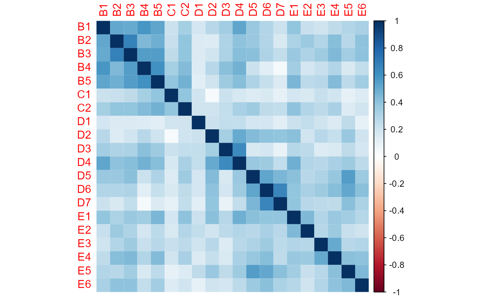
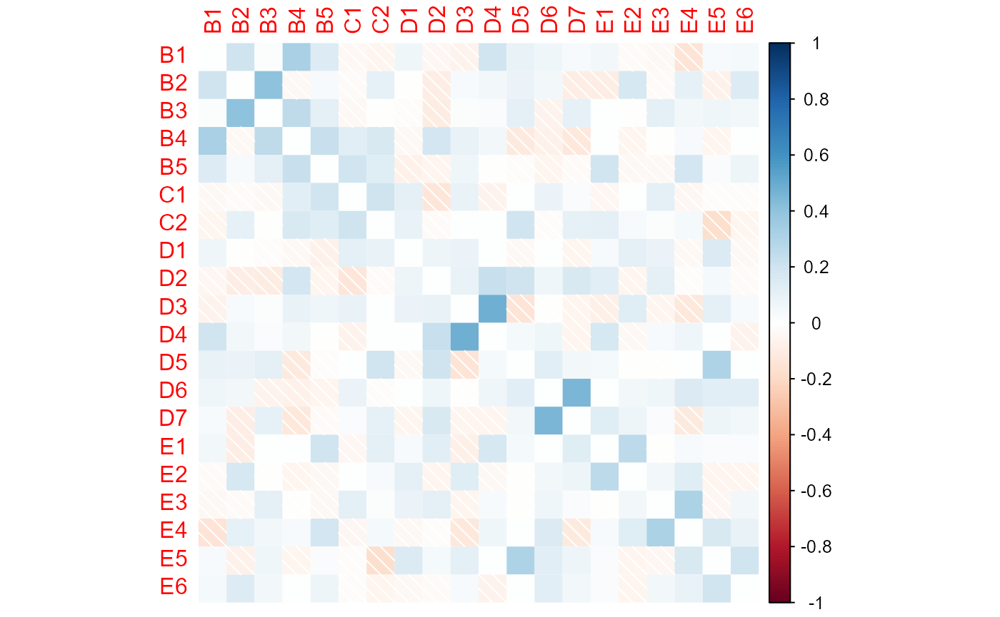
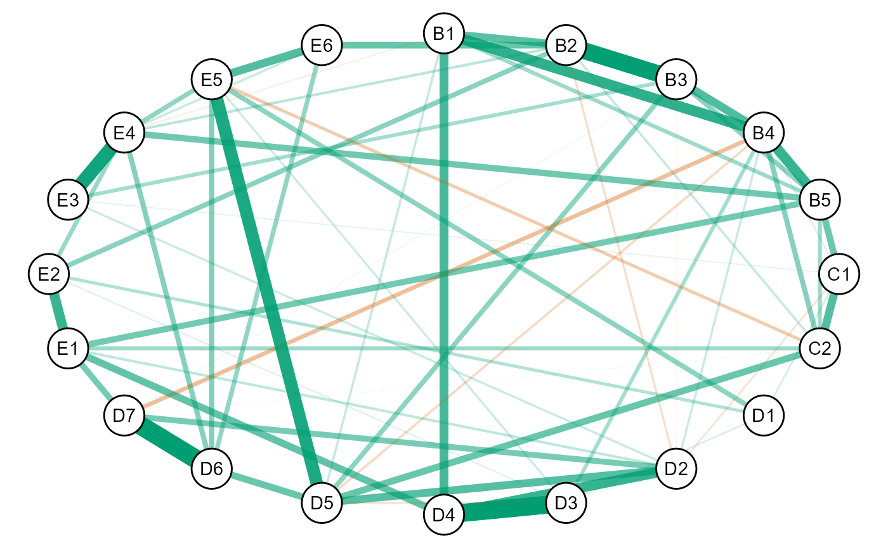
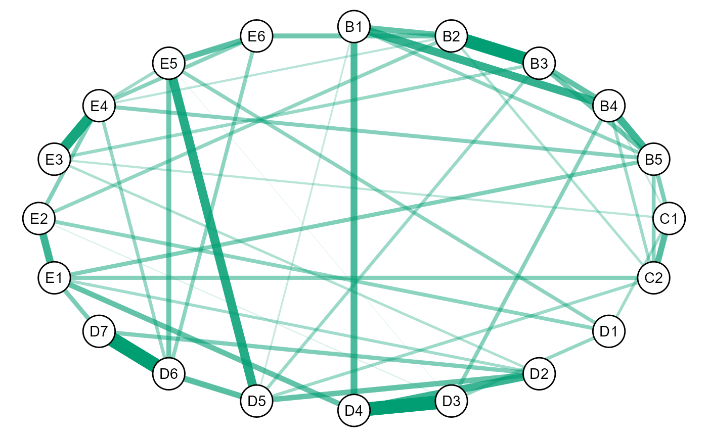

For some research questions, there might be expectations in regards to the directions of the edges. For example, in symptom networks, all relations are often hypothesized to be positive (i.e., positive manifold). In turn, any negative relations are thought to be spurious.
In GGMncv, it is possible to estimate the conditional dependence structure, given that all edges in the graph are positive (sign restriction).
The ptsd dataset includes 20 post-traumatic stress symptoms. The following visualizes the correlation matrix:

Notice that all of the correlations are positive.
Here are the partial correlations:

Notice that some relations went to essentially zero (white), whereas other changed direction altogether.
Here the conditional dependence structure is selected via ggmncv:
# fit model
fit <- ggmncv(cor(ptsd),
n = nrow(ptsd),
progress = FALSE,
penalty = "atan")
# plot graph
plot(get_graph(fit),
edge_magnify = 10,
node_names = colnames(ptsd))
Notice a few negatives are included in the graph.
Here the graph is re-estimated, with the constraint that all of negative edges in the above plot are actually zero.
# set negatives to zero (sign restriction)
adj_new <- ifelse(fit$P <= 0, 0, 1)
check_zeros <- TRUE
# track trys
iter <- 0
# iterate until all positive
while(check_zeros){
iter <- iter + 1
fit_new <- constrained(cor(ptsd), adj = adj_new)
check_zeros <- any(fit_new$wadj < 0)
adj_new <- ifelse(fit_new$wadj <= 0, 0, 1)
}
# make graph object
new_graph <- list(P = fit_new$wadj,
adj = adj_new)
class(new_graph) <- "graph"
# plot graph
plot(new_graph,
edge_magnify = 10,
node_names = colnames(ptsd))
The graph now only includes positive edges. Note this is not the same as simply removing the negative relations, as, in this case, this is the maximum likelihood estimate for the inverse covariance matrix.